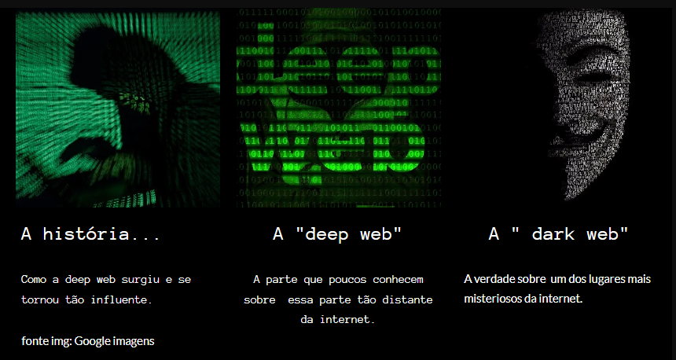
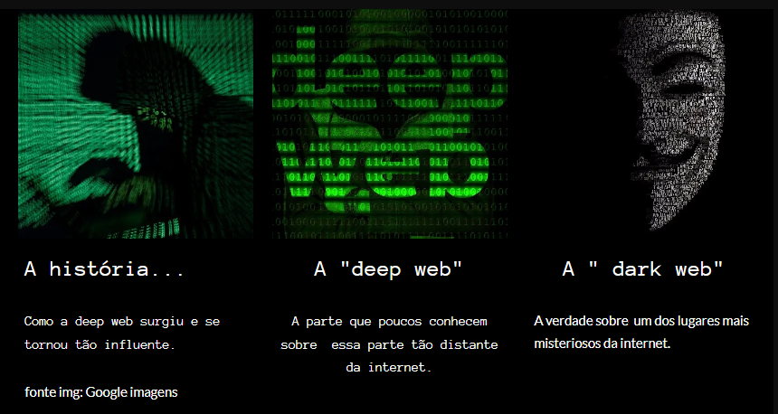

Qualificações
Estudante do primeiro período de Análise e desenvolvimento de sistemas em busca de um funçoes na area.
Escolaridade
Análise e desenvolvimento de sistemas - Unimetrocamp Wyden
Agosto- 2023 - cursando
Curso de inglês basico/intermediário, Curso de espanhol basico/intermediário.
Cursos de Aprimoramento
Pacote Office (Windows, Word, Excel, Power Point) e Internet
Experiência profissional:
Swisport - ( OUTUBRO - 2023- ATUAL)
Atuo pelo espro na área administrativa dos empregados, administrando todo e qualquer hora sobre recebimentos
Projeto web tem como objetivo criar e desenvolver uma página web interativa e informativa sobre contar as verdades sobre a deep web. A página servirá como uma plataforma para fornecer informações relevantes e envolventes aos visitantes, bem como demonstrar as habilidades em desenvolvimento web, incluindo HTML5, CSS e, opcionalmente, JavaScript.
Projetada com foco na usabilidade e acessibilidade, garantindo que os visitantes possam navegar facilmente pelo conteúdo e acessar informações de forma clara e eficaz. O projeto também pode incluir elementos de design responsivo para garantir que a página seja acessível em diversos dispositivos, como computadores desktop, tablets e smartphones.
Registros do projeto:
 
